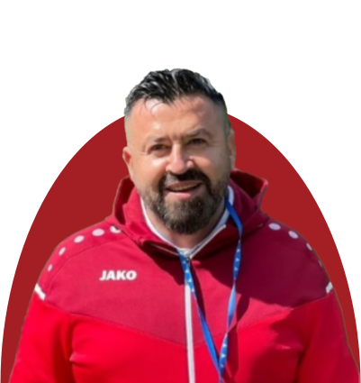
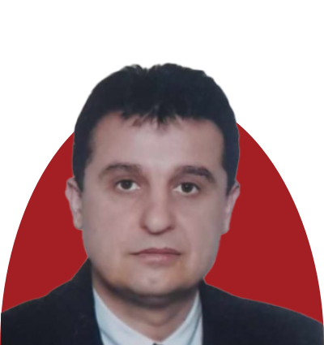

ЖФК Борец е формиран во 2006 година. ЖФК Борец е првиот фудбаласки
женски клуб формиран во Македонија кој во 2010 година беше шампион на
Македонија, освојувач на Купот на Македонија и учесник во лига на
шампиони во Литванија.
Во моментов ЖФК Борец се натпреварува во Втора Фудбалска Женска Лига
во Македонија. Дел од ЖФК Борец се околу 30тина млади девојки од Велес
и од градови од Вардарскиот регион.
ЖФК Борец им обезбедува на тренерите редовна едукација и развој со
можност за размена на искуства со тренери од Регионот преку разни
проекти, а на девојките кои се од овој клуб им овозможува тренинг
кампови со едукативен карактер за личен раст и развој.
Главниот акцент е ставен на развојот на играчите со надеж дека многу
од нашите девојки ќе продолжат да прават големи чекори кон елитната
женска игра со нашиот тим за развој и да добијат меѓународно
признание.
Стратешките цели на ЖФК Борец се:
1. Социјална инклузија
2. Зголемен квалитет и атрактивност на женски фудбалски клуб
3. Подобрување на условите и стандардот на женските фудбалски клубови
4. Родова реднаквост

Кирил Лазов
Кирил Лазов е претседател и доктор на ЖФК Борец.
Кирил Лазов
Кирил Лазов е претседател и доктор на ЖФК Борец. Д-р Кирил
Лазов е доктор на Институтот за Трансфузиона Медицина на РМ.
Во својата кариера бил доктор и на ракометен и одбојкарски
клуб.
Тој е лиценциран долгогодишен фудбалски доктор во ЖФК Борец
на фудбалерките за време на натпреварите и тренинг сесиите.
Во август 2022 година ја презема функцијата и претседател на
Женскиот Фудбалски Клуб Борец.
Кирил Лазов има учествувано на бројни спортски контакт
семинари како во земјата така и во земји во Европа за развој
на женскиот фудбал и спортот воопшто, како и за зголемување
на квалитетот и атрактивноста на женскиот фудбал и
подобрување на условите и стандардот на женските фудбалски
клубови како и родова еднаквост во фудбалот.
Лилјана Лазова
Лилјана Лазова е проектен координатор и спортски
директор на ЖФК Борец.
Лилјана Лазова
Лилјана Лазова е проектен координатор и спортски директор во
ЖФК Борец
Таа има долгогодишно работно искуство во неколку организации
на различни програми и проекти, особено Еразмус програмата и
ИПА проектите. Во својата работа има учествувано во
развојот, дизајнирањето и имплементацијата на голем број
програми во Македонија и во други ЕУ земји, вклучително и
програми за образование на возрасни, особено неформалното
образование за возрасни и млади.

Тоше Нацев
Тоше Нацев е тренер на ЖФК Борец.
Тоше Нацев
Тоше Нацев е тренер на ЖФК Борец. Својата тренерска кариера
ја започнал во 1992 година во фудбалскиот клуб Борец со
пионери во машка категорија па се до сениори.
Во 2006 тој е дел од формирањето на ЖФК Борец и до ден денес
е тренер. Исто така бил и 10 години селектор на женска
фудбалска репрезентација до 17 год а краток период и на А
селекција на женска репрезентација.
Со ЖФК Борец има освоено шампионска титула во првенството и
го има освоено купот на Македонија и имаат играно
квалификации за Лига на шампиони.